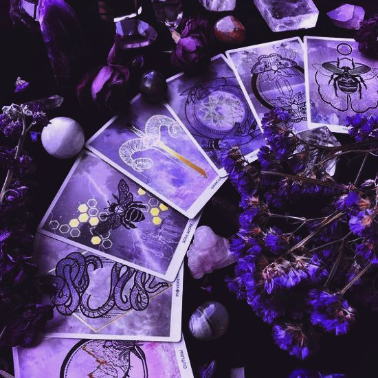

Explora el tarot y sus significados
🔮El tarot tiene una historia muy interesante, pues es un arte adivinatorio que ha fascinado a personas de diversas culturas y épocas a lo largo de la historia. Sus orígenes se remontan a la Europa del siglo XV, donde comenzaron a utilizarse las primeras cartas con fines lúdicos y esotéricos. Con el tiempo, el tarot se ha convertido en una herramienta emblemática para explorar el subconsciente, desentrañar misterios y encontrar orientación en la vida. A través de sus arcanos, simbolismos y lecturas, el tarot sigue cautivando a aquellos que buscan respuestas y claridad en su camino.🔮
Aρяεиdε ѕσвяε εl тαяσт๋࣭ ⭑⚝